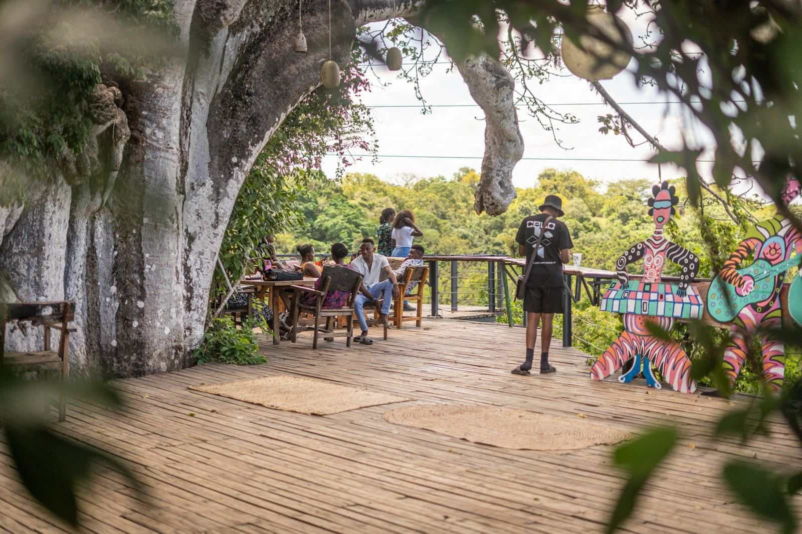

Conferences · Crypto / Web3
ETHSafari 2027
- Dates
- Dates TBA
- Venue
- Nairobi to Kilifi (finale in Kilifi; 2027 venues TBC)
- Location
- Kilifi, Kenya
- Format
- In-person
- Category
- Crypto / Web3
- Industry
- Ethereum and Web3 conference and festival
- Organiser
- ETHSafari
- Official website
- https://ethsafari.xyz/
About
Official site (fetched 24 Nov 2026) shows 'DATES TBA · NAIROBI → KILIFI' and 'Dates TBA' for the Nairobi-to-Kilifi journey. The 2026 edition (4–12 September 2026, described as the fifth year) is now past; leftover '2026 edition' application wording remains on the homepage. Record is the next edition, dates TBA. Kenya dates are local (East Africa Time, EAT, UTC+3, no daylight saving).
Topics: Ethereum, web3, blockchain, hackathon.
No organiser attendance figure found on the official pages checked (24 Nov 2026). Ranked by an estimated size tier 'medium' (our judgement from format, venue and scale, not an official number).